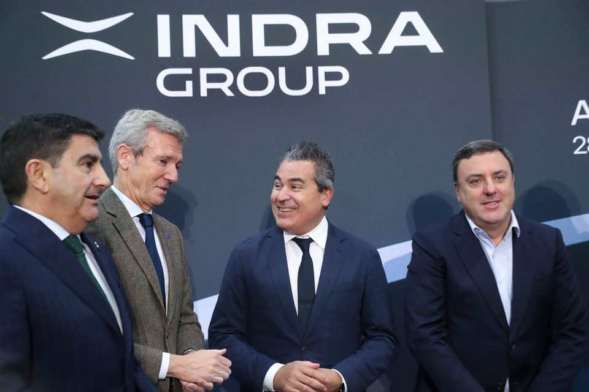

Indra pesca en una industria del automóvil en crisis: realiza 14 fichajes de directivos en tres años

La compañía acaba de traer de Seat a su nuevo jefe de producto, Beltrán Sanz. La mayoría de las incorporaciones vienen de Renault y Seat
Indra está pescando en el caladero del automóvil aprovechando la crisis que vive el sector por la accidentada conversión al vehículo eléctrico y la competencia con China. Según la información recopilada por este periódico, la compañía ha fichado en los últimos tres años al menos a 14 directivos provenientes del motor para ocupar cargos altos y medios dentro de la estructura de Indra. La mayoría de ellos provienen de Renault y Seat, con la excepción de Frank Torres, actual director de operaciones y miembro del comité de dirección, que fue fichado desde Nissan por el anterior consejero delegado, José Vicente de los Mozos. Torres, considerado un cost killer —es decir, un especialista en…